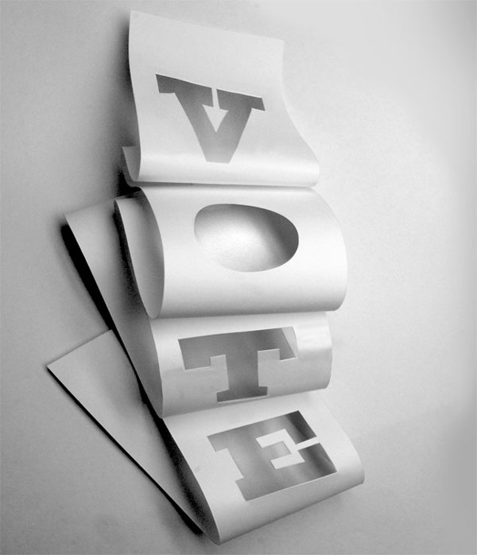
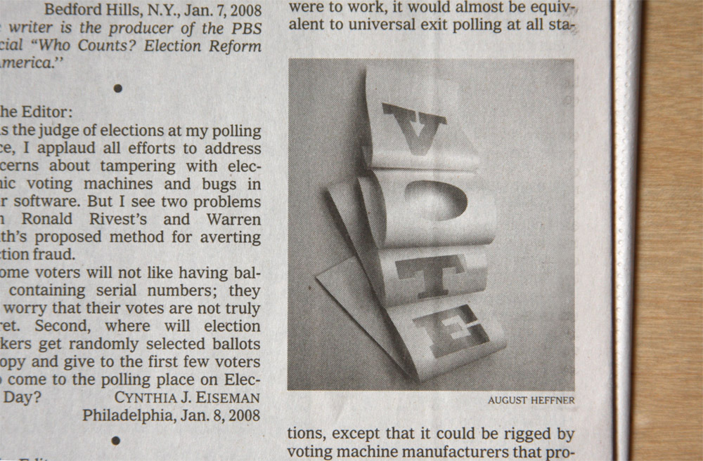
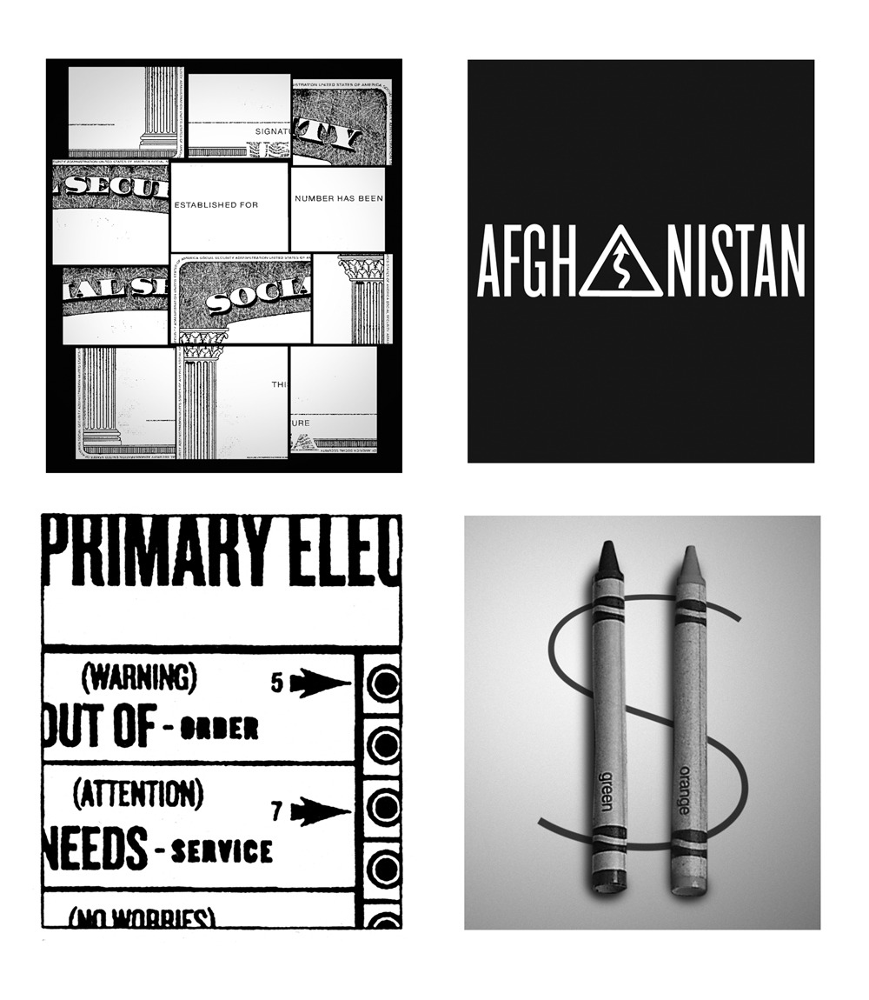

This work was completed with the amazing art directors of the New York Times Opinion-Editorial page including Brian Rea, Kim Bost, Leanne Shapton, & Aviva Michaelov.
For several years I contributed illustrations to The New York Times Opinion/Editorial page.¹ I learned the excitement of this work from assisting (the master) Stephen Doyle³ at Doyle Partners⁴ on a variety of assignments. Along with all the design education I received under Doyle’s leadership, our daily all-office lunches taught me to read the newspaper every morning. I was 23 years old in an office of creatives twice my age. If I didn't read the news in the morning, by lunchtime I was toast.
I was called to do my first piece by then Art Director Brian Rea.³ I was working as a designer at Interbrand when he called at 9am. He sent me tomorrow’s article and these brief specs:
2.15" wide x 2.5" tall
b/w
$175.
sketches by 2pm
final by 6-6:30pm
I had to decide to either take the day off and work on it at home, or sneak the work into my daily routine as a brand designer. I decided to take the assignment and stay at work. Getting paid twice also sounded illicit and thrilling. The piece was on the “paper trail” left by election machines and other voting mechanisms in the run up to the 2008 presidential election. I sketched 20 pencil ideas and scanned them (pre-iPhone!) to email them for review. The chosen concept was the word “vote” cut out of a long and twisting piece of paper. I printed the letters in a heavy slab serif. Cut them out of white paper and taped them to a board. I photographed the white paper and shadows with a borrowed SLR and gave it about 20min of retouching.
fig9.1
My first editorial illustration for The New York Times. Art Director Brian Rea ↗
Newspaper is very forgiving to simple black and white sculptural photography as it reminds you of the halftones it’s famous for. I bought the paper the next morning at a newsstand and was I in heaven.
fig9.2
“Ways to Improve the Way We Vote” Letters to the Editor from January 9, 2008 Read ↗
The speed. The intensity. The massive audience. It was a dream come true, and hardly sustainable. Over the years I did quite a few more. Always with typography, often with a camera. I never developed a style, but loved the collection nonetheless. It offered a dramatic change of pace to the slow and anonymous corporate brand work I was doing at the time.
fig9.3
Various illustrations over over the summer of 2010.
As a Creative Director (and a parent) it was hard to keep responding to these requests. In the future however, I'd love to continue work that is this immediate, and relevant.
For more about this project please get in touch ↗
2009-2012 · Design & Creative Director, In-house
2017 · Design & Direction, Work & Co.